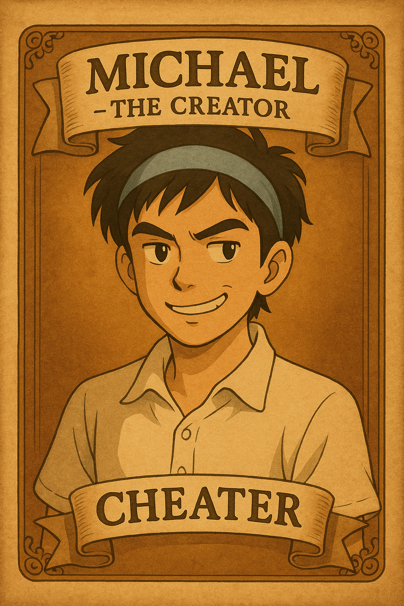
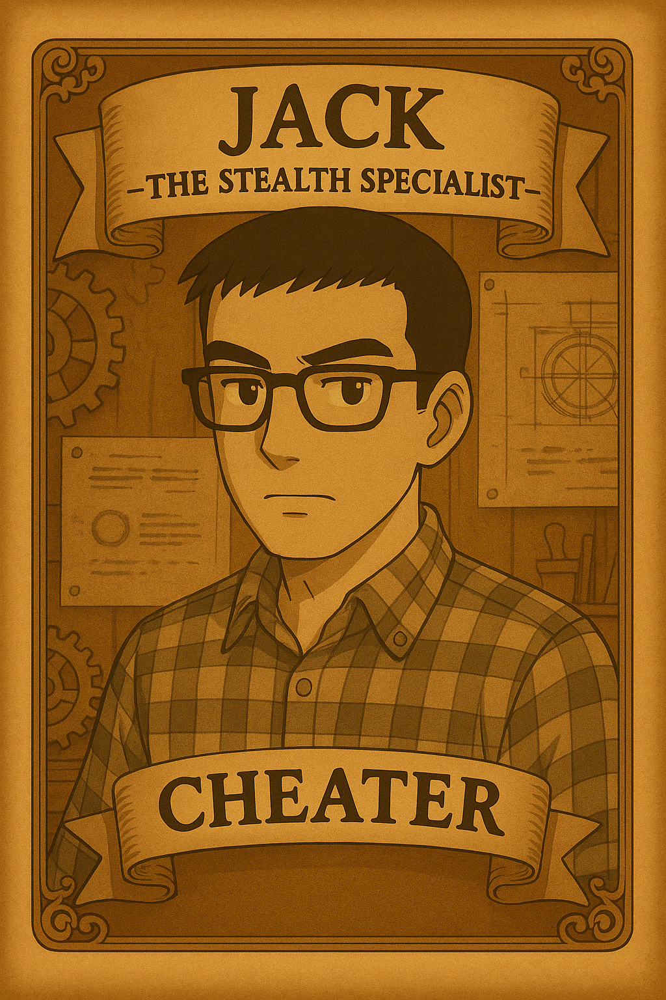
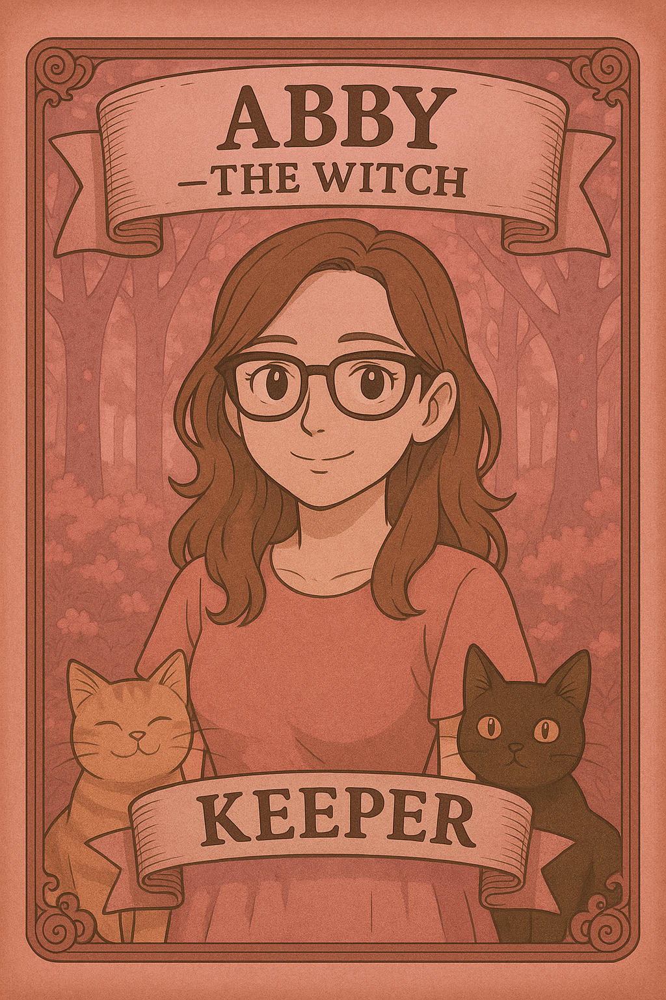
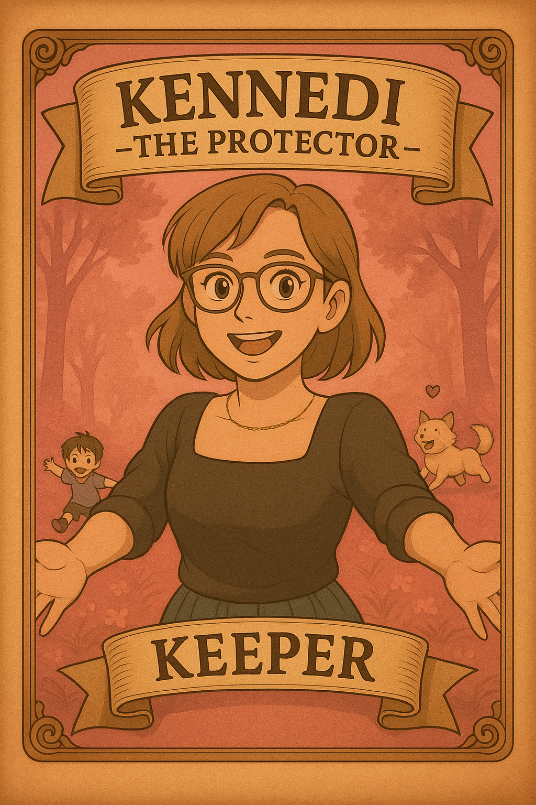
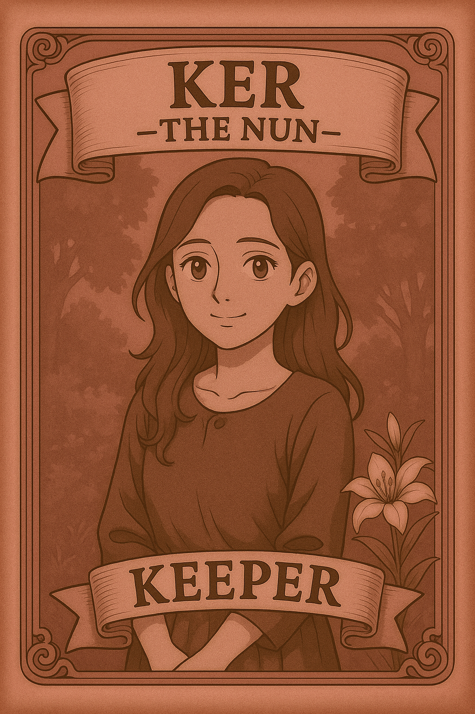
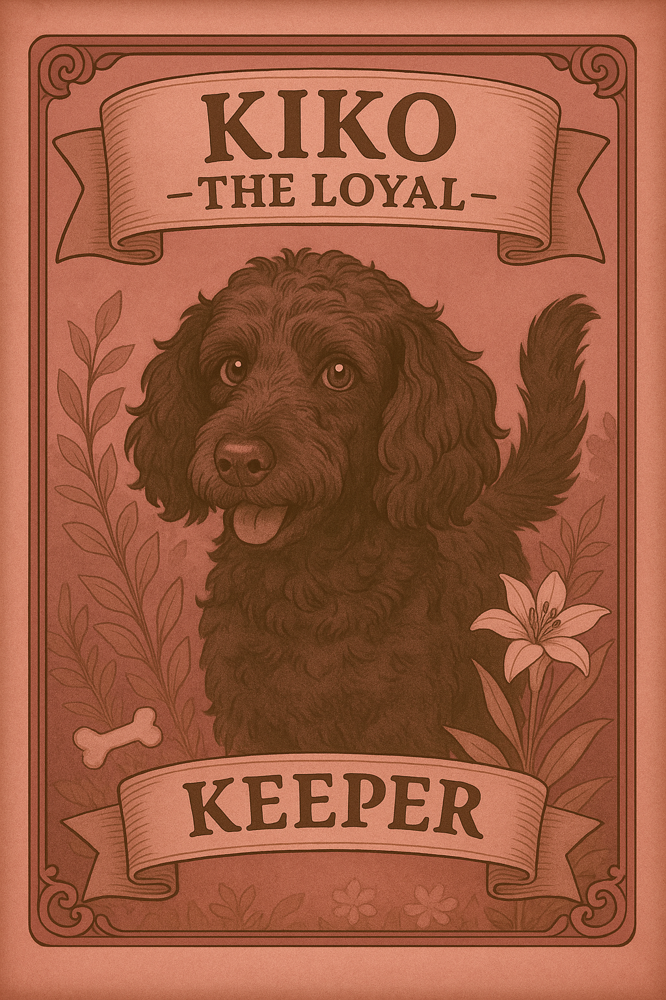
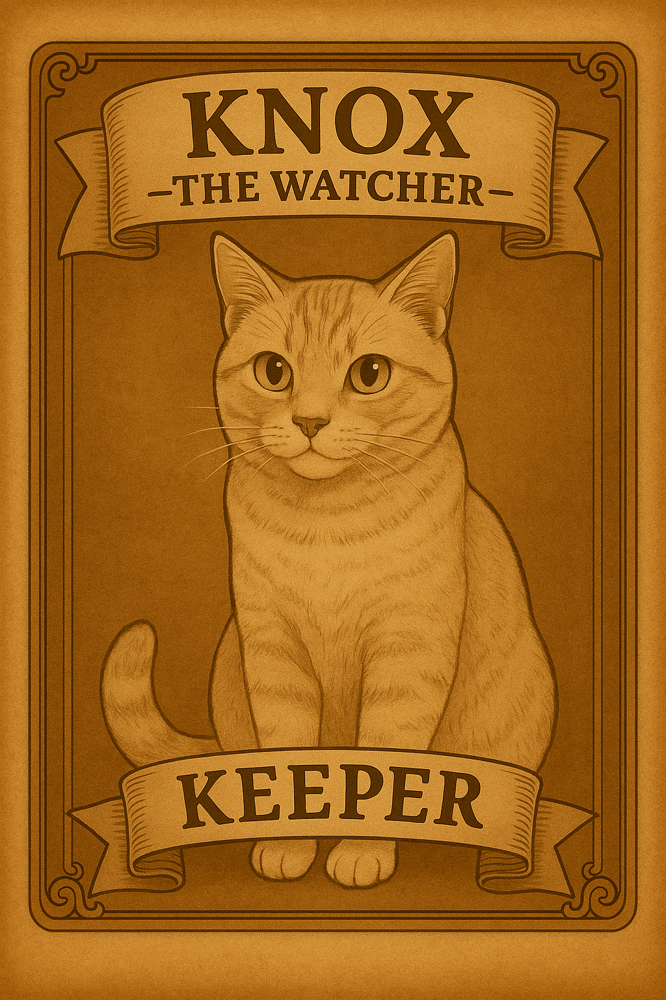
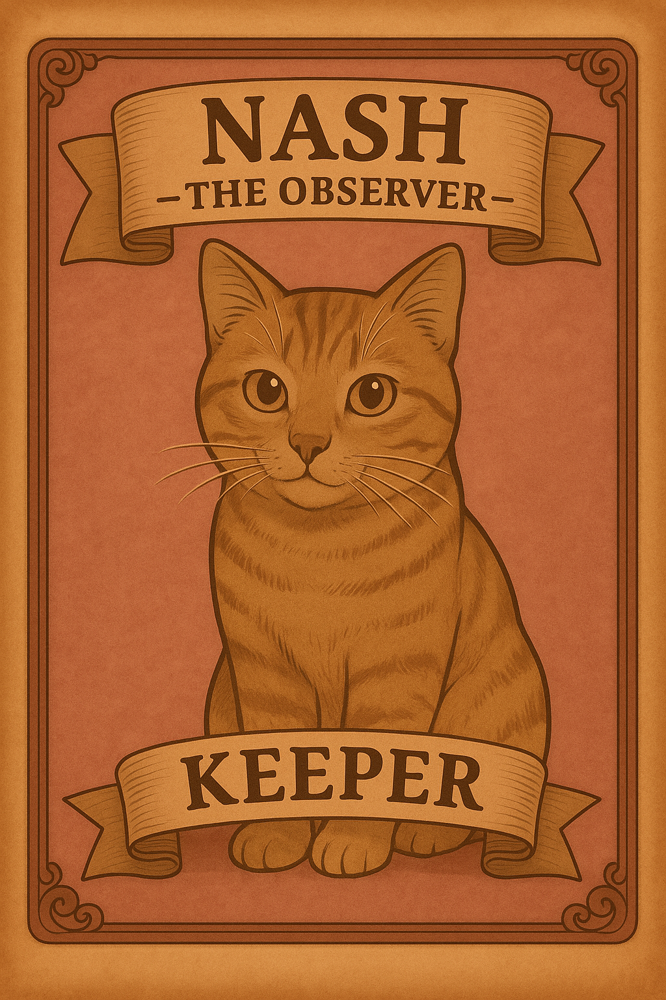

Meet the Characters

Michael
Cheater
Creator's Privilege: Finding Abby
Can guess who Abby is during the Party. If correct, Cheaters win instantly; if wrong, Keepers win instantly.
Can guess who Abby is during the Party. If correct, Cheaters win instantly; if wrong, Keepers win instantly.

Jack
Cheater
I Would Like to Hide My Card
Jack's identity is hidden from Abby and other Cheaters. A mysterious presence at the party.
Jack's identity is hidden from Abby and other Cheaters. A mysterious presence at the party.

Wind
Cheater
Molesting a Boy: At Night, can add extra Scandal.
Mislead: After reveals, can flip one Love to Hate, adding Scandal. A master of stirring up drama.
Mislead: After reveals, can flip one Love to Hate, adding Scandal. A master of stirring up drama.

Abby
Keeper
Keen Sight: During setup, learns all Cheaters except Jack. The sharp-eyed detective of the family.

Kennedi
Keeper
Protecting the Party: Before reveals, can make all cards count as Love, boosting Close-knot. The heart and shield of the group.

Ker
Keeper
The Chosen One: After Helpers are picked, can swap a Helper with a non-Helper. Brings a twist to every party.

Kiko
Keeper (Pet)
A loyal companion on the Keeper side, Kiko is also a Keeper but has no special power. Always present at the party, adding warmth and a touch of magic to the family gatherings.

Knox
Keeper (Pet)
Faithful and playful, Knox is a Keeper on the Keeper side but has no special power. A source of joy and comfort for everyone, loves to be in the middle of the action.

Nash
Keeper (Pet)
The newest addition to the Keeper side, Nash is also a Keeper but has no special power. Brings energy and excitement to every party.
🎮 Game Modes
5 Players: 2 Cheaters (Michael, Wind) + 3 Keepers (Abby, Kennedi, Kiko) + 3 Parties
6 Players: 2 Cheaters (Michael, Wind) + 4 Keepers (Abby, Kennedi, Kiko, Knox) + 3 Parties
7 Players: 2 Cheaters (Michael, Wind) + 5 Keepers (Abby, Kennedi, Kiko, Knox, Nash) + 3 Parties
8 Players: 3 Cheaters (Michael, Jack, Wind) + 5 Keepers (Abby, Kennedi, Ker, Kiko, Knox) + 4 Parties
9 Players: 3 Cheaters (Michael, Jack, Wind) + 6 Keepers (Abby, Kennedi, Ker, Kiko, Knox, Nash) + 4 Parties